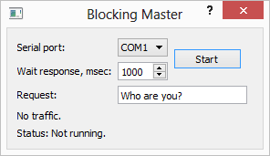

The Blocking Master example shows how to create a application for a serial interface using QSerialPort's synchronous API in a non-GUI thread.

QSerialPort supports two general programming approaches:
In this example, the synchronous approach is demonstrated. The Simple Terminal example illustrates the asynchronous approach.
The purpose of this example is to demonstrate a pattern that you can use to simplify your serial programming code, without losing responsiveness in your user interface. Use of Qt's blocking serial programming API often leads to simpler code, but because of its blocking behavior, it should only be used in non-GUI threads to prevent the user interface from freezing. But contrary to what many think, using threads with QThread does not necessarily add unmanagable complexity to your application.
This application is a Master, that demonstrate the work paired with Slave application Blocking Slave Example.
The Master application is initiate the transfer request via serial port to the Slave application and wait for a response from it.
We will start with the MasterThread class, which handles the serial programming code.
MasterThread is a QThread subclass that provides an API for scheduling requests to Slave, and it has signals for delivering responses and reporting errors. You can call transaction() to startup new master transaction with desired request data and other parameters, and the result is delivered by the response() signal. If any error occurs, the error() or timeout() signals is emitted.
It's important to notice that transaction() is called from the main, GUI thread, but the request data and other parameters will be accessed from MasterThread's thread. Because we will be reading and writing MasterThread's data members from different threads concurrently, we use QMutex to synchronize access.
The transaction() function stores the serial port name, timeout and request data, and we lock the mutex with QMutexLocker to protect this data. We then start the thread, unless it is already running. We will come back to the QWaitCondition::wakeOne() call later.
In the run() function, we start by acquiring the mutex lock, fetching the serial port name, timeout and request data from the member data, and then releasing the lock again. The case that we are protecting ourselves against is that transaction() could be called at the same time as we are fetching this data. QString is reentrant but not thread-safe, and we must also avoid the unlikely risk of reading the serial port name from one request, and timeout or request data of another. And as you might have guessed, MasterThread can only handle one request at a time.
The QSerialPort object we construct on stack into run() function before loop enter:
This allows us once to create an object, while running loop, and also means that all the methods of the object will be executed in the context of the run() thread.
In the loop, we check for changed or not the name of serial port for the current transaction. And if the name is changed then re-open and re-configure the serial port.
The loop will continue creating request data, write to serial port and wait until all data is transferred.
Warning: The method waitForBytesWritten() should be used after each write() call for the blocking approach, because it processes all the I/O routines instead of Qt event-loop.
The timeout() signal is emitted if error occurs when transferring data.
After a successful request, we start wait until response and try read it.
Warning: The method waitForReadyRead() should be used before each read() call for the blocking approach, because it processes all the I/O routines instead of Qt event-loop.
The timeout() signal is emitted if error occurs when receiving data.
After a successful transaction is emitted response() signal containing the data received from the Slave application:
Next, the thread goes to sleep until the next transaction is appear. On waking, the thread re-reads the new data of members and run loop from the beginning.
See also Simple Terminal Example and Blocking Slave Example.